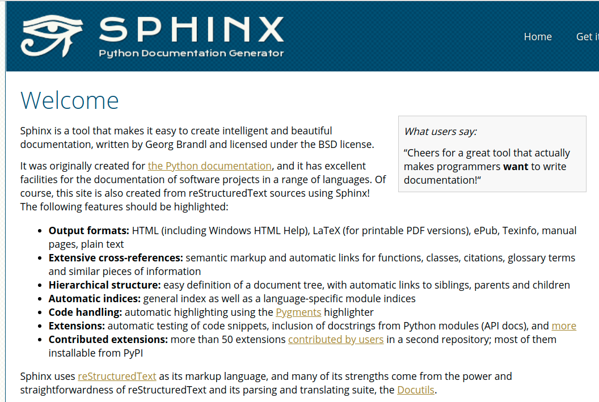
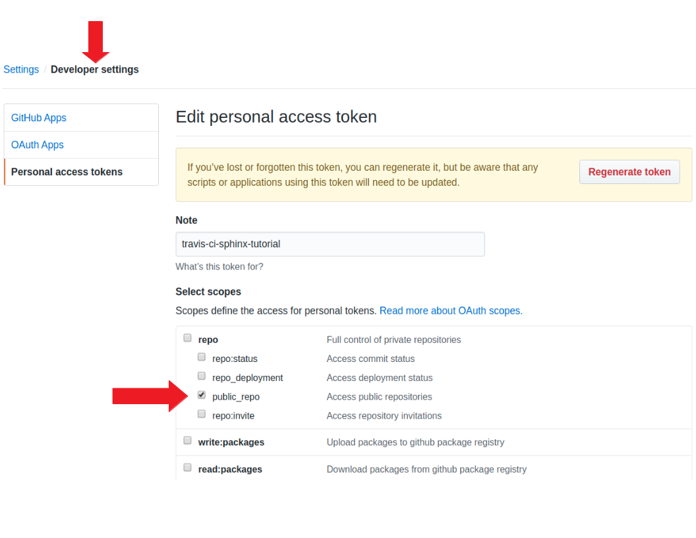
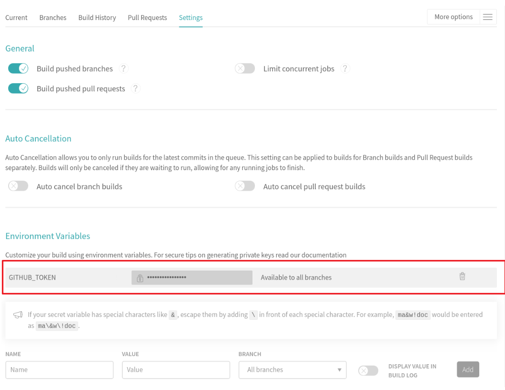
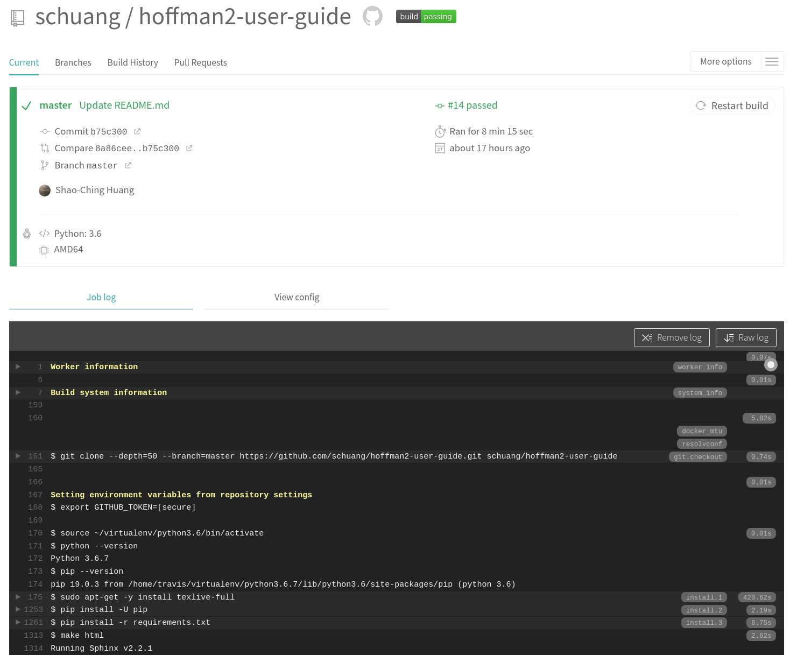
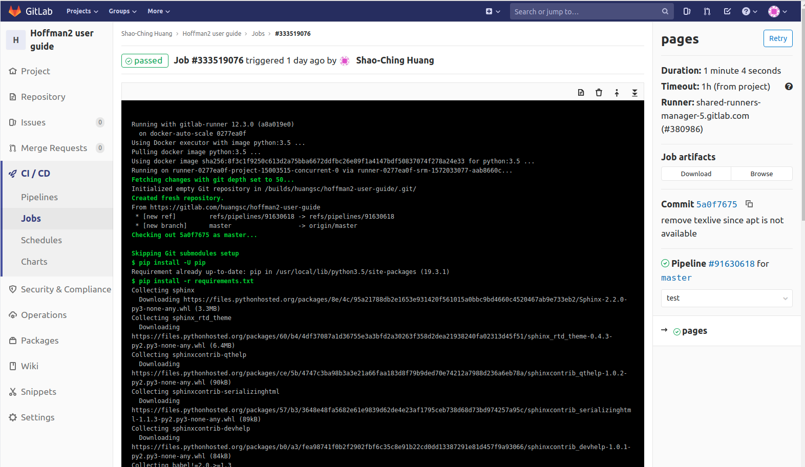

title: A Breif Introduction to Sphinx subtitle: Technical Documentation with Continuous Integration and Deployment author: Shao-Ching Huang date: 2019-10-31¶
Technical documentation system: considerations¶
Not the same as writing a blog article
Writing
Focus on contents and structures, strict and fixed formatting
Principle of separation: contents vs. layout
Review
easy to see changes, revert, comment, collaborate etc
Other considerations
Subject experts are not necessarily web developers
Multiple formats generated from the same source (e.g. web pages and pdf report/manual)
What is Sphinx¶
Sphinx converts reStructuredText files into HTML websites and PDF, EPub, Texinfo and man.
reStructuredText (RST, ReST, or reST) is a file format for textual data for technical documentation.
a more powerful markdown without diverging flavors

Advantages of using Sphinx¶
Based on text files (close to plain text)
Use one’s favoriate editor/local environment for writing
Easy to track changes using version control
Standard git pull (or merge) request review process
Easy to programmatically manipulate the text files, if needed
The entire workflow is open-source based, no vendor lock-in
Generate static HTML pages
No security concerns
No need to maintain WordPress that often “automatically” breaks
Can use free hosting services (github, gitlab, read the docs, etc.) if desired
Sphinx demo¶
view the source
view the site
Using Sphinx with CI: the big picture¶
Continuous integration/deployment (CI/CD)¶
A software engineering technique to integrate early and often to avoid “integration hell”
Best practices:
Automate the build
Commit changes to repository regularly
Every commit is built and tested
Travis CI¶
Travis CI is a hosted contiguous integration service
Integration with GitHub
Free for open-source projects, paid plans for private repositories
Web site: https://travis-ci.com/
There are also several other popular CI systems with a variety of build systems (C, C++, Python, PHP, etc.)
Enabling Travis CI on a Github repository¶
Create an access token in github.com
Past the access token into Travis CI to enable access to Github
e.g.
$GITHUB_TOKENUse it in
.travis.yml
Other CI/CDs have a similar procedure, e.g.
gitlab.com
github.com personal access token¶

travis-ci.com environment variable¶

YAML to control the CI process {.allowframebreaks}¶
$ cat .travis.yml
language: python
branches:
only:
- master
python:
- '3.6'
install:
- pip install -U pip
- pip install -r requirements.txt
script:
- make html
deploy:
provider: pages
skip_cleanup: true
github_token: $GITHUB_TOKEN
local_dir: build/html
on:
branch: master
Travis CI jobs¶

Useful Sphinx settings in conf.py¶
To support Github pages:
extensions = [ 'sphinx.ext.mathjax',
'sphinx.ext.githubpages' ]
To also support markdown source files:
source_suffix = { '.rst': 'restructuredtext',
'.md' : 'markdown' }
Travis CI demo¶
What to look:
See the github repository and travis-ci.com
Commit to github triggering Travis CI build job
Watch the “job log” in real time
Build status badge
gitlab pages pipeline¶
similar to Travis CI
use
.gitlab-ci.yml(different syntax than.travis.yml)Can use arbitrary docker image from docker hub
CI is ingegrated in gitlab, so no need to create the access token
use
/public
¶
$ cat .gitlab-ci.yml
image: python:3.6
pages:
script:
- pip install -U pip
- pip install -r requirements.txt
- make html
- mv build/html/ public/
artifacts:
paths:
- public
only:
- master
gitlab pipeline jobs¶

Summary {.allowframebreaks}¶
Sphinx is powerful documentation generator
Designed for technical documentation, used by many projects
Can easily include images, math, and code listing in style
Static web pages are light-weight, robust, and have no security issues
Single source, multiple output formats
Separation of contents and display formatting/layout
Contents written in plain texts, formatting controlled by css/template/etc.
Ideal for git-based version control (pull/merge request etc.)
Contiguous Integration (CI) automate rebuild when there is a change
Travis CI builds from Github sources, place HTML on Github pages
Total control of the documentation production process, including themes
CI can be applied to other actions (by essentially arbrary scripts)
Freedom of having different hosting options
Local web server (i.e. just copy the HTML directory) - total control
Github/Gitlab pages using contiguous integration (CI) - total control
Hosting service like Read the Docs (but have to following their format/style) - partial control
Final thoughts¶
Of course, Sphinx is a tool to build documentation. A tool does not automatically make the contents good.